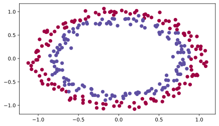
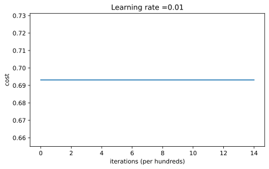
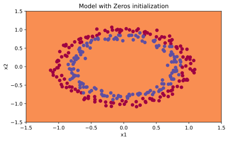
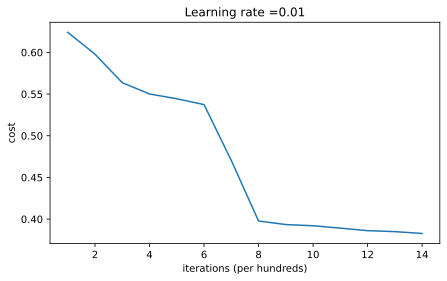
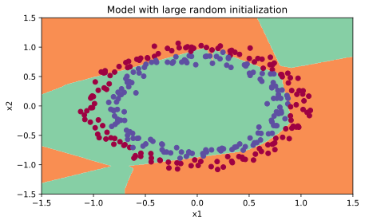
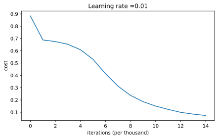
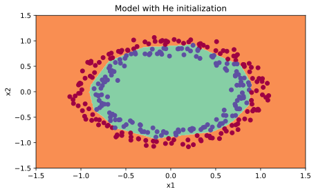

%config InlineBackend.figure_formats = ['svg']
import numpy as np
import matplotlib.pyplot as plt
import sklearn
import sklearn.datasets
plt.rcParams['figure.figsize'] = (7.0, 4.0) # default size of plotsLab: Initialization
deep-learning
lab
initialization
Train the same 3-layer network with zeros, large random, and He initialization and compare convergence, accuracy, and decision boundaries.
This lab is the first programming assignment of the course, and it puts the weight initialization section into practice. You will train the same 3-layer neural network three times, changing nothing but how the weights are initialized (all zeros, large random values, and He initialization), and watch how dramatically that one choice affects learning. A well-chosen initialization can speed up the convergence of gradient descent and increase the odds of gradient descent converging to a lower training (and generalization) error.
Packages and Helpers
The lab uses NumPy for the math, matplotlib for plots, and scikit-learn only to generate a small synthetic dataset. There is no external data file to download.
The course provides a helper file, init_utils.py, with the parts of the network that are not the point of this lab. It contains the activation functions, forward and backward propagation for the fixed 3-layer architecture, the loss, the gradient descent update, prediction, the dataset loader, and a decision boundary plotter. They are reproduced in the collapsed callout below, with two tiny compatibility fixes for current library versions (dtype=np.int is now dtype=int, and the scatter color argument gets .ravel() so matplotlib accepts it).
NoteLab Files Download
This lab needs a single file, init_utils.py (7 KB), the helper functions with the compatibility fixes already applied. There is no dataset to download, since load_dataset() generates the circles data in code.
NoteHelper Functions from init_utils.py
def sigmoid(x):
"""Compute the sigmoid of x."""
s = 1 / (1 + np.exp(-x))
return s
def relu(x):
"""Compute the relu of x."""
s = np.maximum(0, x)
return s
def forward_propagation(X, parameters):
"""LINEAR -> RELU -> LINEAR -> RELU -> LINEAR -> SIGMOID."""
W1 = parameters["W1"]
b1 = parameters["b1"]
W2 = parameters["W2"]
b2 = parameters["b2"]
W3 = parameters["W3"]
b3 = parameters["b3"]
z1 = np.dot(W1, X) + b1
a1 = relu(z1)
z2 = np.dot(W2, a1) + b2
a2 = relu(z2)
z3 = np.dot(W3, a2) + b3
a3 = sigmoid(z3)
cache = (z1, a1, W1, b1, z2, a2, W2, b2, z3, a3, W3, b3)
return a3, cache
def backward_propagation(X, Y, cache):
"""Backward propagation for the 3-layer network."""
m = X.shape[1]
(z1, a1, W1, b1, z2, a2, W2, b2, z3, a3, W3, b3) = cache
dz3 = 1. / m * (a3 - Y)
dW3 = np.dot(dz3, a2.T)
db3 = np.sum(dz3, axis=1, keepdims=True)
da2 = np.dot(W3.T, dz3)
dz2 = np.multiply(da2, np.int64(a2 > 0))
dW2 = np.dot(dz2, a1.T)
db2 = np.sum(dz2, axis=1, keepdims=True)
da1 = np.dot(W2.T, dz2)
dz1 = np.multiply(da1, np.int64(a1 > 0))
dW1 = np.dot(dz1, X.T)
db1 = np.sum(dz1, axis=1, keepdims=True)
gradients = {"dz3": dz3, "dW3": dW3, "db3": db3,
"da2": da2, "dz2": dz2, "dW2": dW2, "db2": db2,
"da1": da1, "dz1": dz1, "dW1": dW1, "db1": db1}
return gradients
def update_parameters(parameters, grads, learning_rate):
"""Update parameters using gradient descent."""
L = len(parameters) // 2 # number of layers in the neural network
for k in range(L):
parameters["W" + str(k + 1)] = parameters["W" + str(k + 1)] - learning_rate * grads["dW" + str(k + 1)]
parameters["b" + str(k + 1)] = parameters["b" + str(k + 1)] - learning_rate * grads["db" + str(k + 1)]
return parameters
def compute_loss(a3, Y):
"""Logistic loss averaged over the training set."""
m = Y.shape[1]
logprobs = np.multiply(-np.log(a3), Y) + np.multiply(-np.log(1 - a3), 1 - Y)
loss = 1. / m * np.nansum(logprobs)
return loss
def predict(X, y, parameters):
"""Predict 0/1 labels and print the accuracy."""
m = X.shape[1]
p = np.zeros((1, m), dtype=int)
a3, caches = forward_propagation(X, parameters)
for i in range(0, a3.shape[1]):
if a3[0, i] > 0.5:
p[0, i] = 1
else:
p[0, i] = 0
print("Accuracy: " + str(np.mean((p[0, :] == y[0, :]))))
return p
def predict_dec(parameters, X):
"""Predictions used for plotting the decision boundary."""
a3, cache = forward_propagation(X, parameters)
predictions = (a3 > 0.5)
return predictions
def plot_decision_boundary(model, X, y):
x_min, x_max = X[0, :].min() - 1, X[0, :].max() + 1
y_min, y_max = X[1, :].min() - 1, X[1, :].max() + 1
h = 0.01
xx, yy = np.meshgrid(np.arange(x_min, x_max, h), np.arange(y_min, y_max, h))
Z = model(np.c_[xx.ravel(), yy.ravel()])
Z = Z.reshape(xx.shape)
plt.contourf(xx, yy, Z, cmap=plt.cm.Spectral)
plt.ylabel('x2')
plt.xlabel('x1')
plt.scatter(X[0, :], X[1, :], c=y.ravel(), cmap=plt.cm.Spectral)
plt.show()
def load_dataset():
np.random.seed(1)
train_X, train_Y = sklearn.datasets.make_circles(n_samples=300, noise=.05)
np.random.seed(2)
test_X, test_Y = sklearn.datasets.make_circles(n_samples=100, noise=.05)
# Visualize the data
plt.scatter(train_X[:, 0], train_X[:, 1], c=train_Y, s=40, cmap=plt.cm.Spectral)
train_X = train_X.T
train_Y = train_Y.reshape((1, train_Y.shape[0]))
test_X = test_X.T
test_Y = test_Y.reshape((1, test_Y.shape[0]))
return train_X, train_Y, test_X, test_YLoading the Dataset
The data is two concentric rings of points, 300 for training and 100 for testing, generated by scikit-learn’s make_circles with a little noise. Each point has two coordinates, and the label is 1 (blue, inner circle) or 0 (red, outer circle). As usual in this course, examples are stacked in columns, so train_X has shape \((2, 300)\) and train_Y has shape \((1, 300)\). The classifier’s job is to separate the blue dots from the red dots.
train_X, train_Y, test_X, test_Y = load_dataset()
Neural Network Model
The model is a 3-layer network, LINEAR → RELU → LINEAR → RELU → LINEAR → SIGMOID, with layer sizes \([2, 10, 5, 1]\). Forward propagation, backward propagation, and the parameter updates are the helpers above; the only thing that changes between experiments is the initialization argument, which selects one of the three functions you implement next. Each experiment runs 15,000 iterations of gradient descent with learning rate 0.01 and prints the cost every 1,000 iterations.
def model(X, Y, learning_rate=0.01, num_iterations=15000, print_cost=True, initialization="he"):
"""
Implements a three-layer neural network: LINEAR->RELU->LINEAR->RELU->LINEAR->SIGMOID.
Arguments:
X -- input data, of shape (2, number of examples)
Y -- true "label" vector (containing 0 for red dots; 1 for blue dots), of shape (1, number of examples)
learning_rate -- learning rate for gradient descent
num_iterations -- number of iterations to run gradient descent
print_cost -- if True, print the cost every 1000 iterations
initialization -- flag to choose which initialization to use ("zeros", "random" or "he")
Returns:
parameters -- parameters learned by the model
"""
grads = {}
costs = [] # to keep track of the loss
m = X.shape[1] # number of examples
layers_dims = [X.shape[0], 10, 5, 1]
# Initialize parameters dictionary.
if initialization == "zeros":
parameters = initialize_parameters_zeros(layers_dims)
elif initialization == "random":
parameters = initialize_parameters_random(layers_dims)
elif initialization == "he":
parameters = initialize_parameters_he(layers_dims)
# Loop (gradient descent)
for i in range(num_iterations):
# Forward propagation: LINEAR -> RELU -> LINEAR -> RELU -> LINEAR -> SIGMOID.
a3, cache = forward_propagation(X, parameters)
# Loss
cost = compute_loss(a3, Y)
# Backward propagation.
grads = backward_propagation(X, Y, cache)
# Update parameters.
parameters = update_parameters(parameters, grads, learning_rate)
# Print the loss every 1000 iterations
if print_cost and i % 1000 == 0:
print("Cost after iteration {}: {}".format(i, cost))
costs.append(cost)
# plot the loss
plt.plot(costs)
plt.ylabel('cost')
plt.xlabel('iterations (per hundreds)')
plt.title("Learning rate =" + str(learning_rate))
plt.show()
return parametersZero Initialization
There are two types of parameters to initialize in a neural network, the weight matrices \(W^{[1]}, \ldots, W^{[L]}\) and the bias vectors \(b^{[1]}, \ldots, b^{[L]}\). The first exercise initializes all of them to zeros, using np.zeros((.., ..)) with the correct shapes. You will see shortly that this does not work well, because it fails to “break symmetry”, but try it anyway and see what happens.
def initialize_parameters_zeros(layers_dims):
"""
Arguments:
layers_dims -- python array (list) containing the size of each layer.
Returns:
parameters -- python dictionary containing your parameters "W1", "b1", ..., "WL", "bL":
W1 -- weight matrix of shape (layers_dims[1], layers_dims[0])
b1 -- bias vector of shape (layers_dims[1], 1)
...
WL -- weight matrix of shape (layers_dims[L], layers_dims[L-1])
bL -- bias vector of shape (layers_dims[L], 1)
"""
parameters = {}
L = len(layers_dims) # number of layers in the network
for l in range(1, L):
parameters['W' + str(l)] = np.zeros((layers_dims[l], layers_dims[l - 1]))
parameters['b' + str(l)] = np.zeros((layers_dims[l], 1))
return parameters
parameters = initialize_parameters_zeros([3, 2, 1])
print("W1 = " + str(parameters["W1"]))
print("b1 = " + str(parameters["b1"]))
print("W2 = " + str(parameters["W2"]))
print("b2 = " + str(parameters["b2"]))W1 = [[0. 0. 0.]
[0. 0. 0.]]
b1 = [[0.]
[0.]]
W2 = [[0. 0.]]
b2 = [[0.]]Now train the model for 15,000 iterations using zeros initialization.
parameters = model(train_X, train_Y, initialization="zeros")
print("On the train set:")
predictions_train = predict(train_X, train_Y, parameters)
print("On the test set:")
predictions_test = predict(test_X, test_Y, parameters)Cost after iteration 0: 0.6931471805599453
Cost after iteration 1000: 0.6931471805599453
Cost after iteration 2000: 0.6931471805599453
Cost after iteration 3000: 0.6931471805599453
Cost after iteration 4000: 0.6931471805599453
Cost after iteration 5000: 0.6931471805599453
Cost after iteration 6000: 0.6931471805599453
Cost after iteration 7000: 0.6931471805599453
Cost after iteration 8000: 0.6931471805599453
Cost after iteration 9000: 0.6931471805599453
Cost after iteration 10000: 0.6931471805599453
Cost after iteration 11000: 0.6931471805599453
Cost after iteration 12000: 0.6931471805599453
Cost after iteration 13000: 0.6931471805599453
Cost after iteration 14000: 0.6931471805599453
On the train set:
Accuracy: 0.5
On the test set:
Accuracy: 0.5The performance is terrible, the cost does not decrease at all, and the algorithm performs no better than random guessing (50% accuracy on a balanced two-class problem). Look at the details of the predictions and the decision boundary.
print("predictions_train = " + str(predictions_train))
print("predictions_test = " + str(predictions_test))predictions_train = [[0 0 0 0 0 0 0 0 0 0 0 0 0 0 0 0 0 0 0 0 0 0 0 0 0 0 0 0 0 0 0 0 0 0 0 0
0 0 0 0 0 0 0 0 0 0 0 0 0 0 0 0 0 0 0 0 0 0 0 0 0 0 0 0 0 0 0 0 0 0 0 0
0 0 0 0 0 0 0 0 0 0 0 0 0 0 0 0 0 0 0 0 0 0 0 0 0 0 0 0 0 0 0 0 0 0 0 0
0 0 0 0 0 0 0 0 0 0 0 0 0 0 0 0 0 0 0 0 0 0 0 0 0 0 0 0 0 0 0 0 0 0 0 0
0 0 0 0 0 0 0 0 0 0 0 0 0 0 0 0 0 0 0 0 0 0 0 0 0 0 0 0 0 0 0 0 0 0 0 0
0 0 0 0 0 0 0 0 0 0 0 0 0 0 0 0 0 0 0 0 0 0 0 0 0 0 0 0 0 0 0 0 0 0 0 0
0 0 0 0 0 0 0 0 0 0 0 0 0 0 0 0 0 0 0 0 0 0 0 0 0 0 0 0 0 0 0 0 0 0 0 0
0 0 0 0 0 0 0 0 0 0 0 0 0 0 0 0 0 0 0 0 0 0 0 0 0 0 0 0 0 0 0 0 0 0 0 0
0 0 0 0 0 0 0 0 0 0 0 0]]
predictions_test = [[0 0 0 0 0 0 0 0 0 0 0 0 0 0 0 0 0 0 0 0 0 0 0 0 0 0 0 0 0 0 0 0 0 0 0 0
0 0 0 0 0 0 0 0 0 0 0 0 0 0 0 0 0 0 0 0 0 0 0 0 0 0 0 0 0 0 0 0 0 0 0 0
0 0 0 0 0 0 0 0 0 0 0 0 0 0 0 0 0 0 0 0 0 0 0 0 0 0 0 0]]plt.title("Model with Zeros initialization")
axes = plt.gca()
axes.set_xlim([-1.5, 1.5])
axes.set_ylim([-1.5, 1.5])
plot_decision_boundary(lambda x: predict_dec(parameters, x.T), train_X, train_Y)
The model predicts 0 for every single example. Why? With all weights and biases zero, every pre-activation is \(z = 0\), and with ReLU hidden units
\[ a = \text{ReLU}(z) = \max(0, z) = 0 \]
so zeros flow through the whole network. At the output layer the sigmoid then gives, for every input,
\[ \sigma(z) = \frac{1}{1 + e^{-z}} = \frac{1}{2} \]
A prediction of exactly 0.5 for every example makes the loss identical whether the true label is 1 or 0. For \(y = 1\) the loss is \(-\ln(\tfrac{1}{2}) = 0.693\), and for \(y = 0\) it is also \(-\ln(1 - \tfrac{1}{2}) = 0.693\), which is exactly the cost stuck at 0.693147 in the training printout above. Every unit computes the same thing, receives the same gradient, and stays identical to its neighbors forever. This is the symmetry problem from the random initialization section of the previous course. Initializing all weights to zero means every neuron in each layer learns the same function, so the network is no more powerful than a linear classifier like logistic regression. (For a longer discussion, see the course mentor post Symmetry Breaking versus Zero Initialization.)
ImportantWhat You Should Remember
The weights \(W^{[l]}\) should be initialized randomly to break symmetry. It is, however, okay to initialize the biases \(b^{[l]}\) to zeros; symmetry is still broken as long as \(W^{[l]}\) is initialized randomly.
Random Initialization
To break symmetry, initialize the weights randomly. Following random initialization, each neuron can proceed to learn a different function of its inputs. This exercise deliberately uses large random values, np.random.randn(.., ..) * 10 for the weights and zeros for the biases, to show what happens when the scale is wrong. A fixed random seed makes sure the “random” weights come out the same on every run, so do not worry that repeated runs give identical initial values.
def initialize_parameters_random(layers_dims):
"""
Arguments:
layers_dims -- python array (list) containing the size of each layer.
Returns:
parameters -- python dictionary containing your parameters "W1", "b1", ..., "WL", "bL"
"""
np.random.seed(3) # This seed makes sure your "random" numbers will be the same as ours
parameters = {}
L = len(layers_dims) # integer representing the number of layers
for l in range(1, L):
parameters['W' + str(l)] = np.random.randn(layers_dims[l], layers_dims[l - 1]) * 10
parameters['b' + str(l)] = np.zeros((layers_dims[l], 1))
return parameters
parameters = initialize_parameters_random([3, 2, 1])
print("W1 = " + str(parameters["W1"]))
print("b1 = " + str(parameters["b1"]))
print("W2 = " + str(parameters["W2"]))
print("b2 = " + str(parameters["b2"]))W1 = [[ 17.88628473 4.36509851 0.96497468]
[-18.63492703 -2.77388203 -3.54758979]]
b1 = [[0.]
[0.]]
W2 = [[-0.82741481 -6.27000677]]
b2 = [[0.]]Train the model for 15,000 iterations using this large random initialization.
parameters = model(train_X, train_Y, initialization="random")
print("On the train set:")
predictions_train = predict(train_X, train_Y, parameters)
print("On the test set:")
predictions_test = predict(test_X, test_Y, parameters)Cost after iteration 0: inf
Cost after iteration 1000: 0.6240946882166043
Cost after iteration 2000: 0.5978449711241829
Cost after iteration 3000: 0.5636338302631672
Cost after iteration 4000: 0.550097327262185Cost after iteration 5000: 0.5443542140109684
Cost after iteration 6000: 0.5373689058507384
Cost after iteration 7000: 0.4703439954192491
Cost after iteration 8000: 0.39768133854217425
Cost after iteration 9000: 0.39344534852511953
Cost after iteration 10000: 0.39201679908257836
Cost after iteration 11000: 0.38915469271083064
Cost after iteration 12000: 0.38612747395619024
Cost after iteration 13000: 0.3849707683892173
Cost after iteration 14000: 0.3827517632656006
On the train set:
Accuracy: 0.83
On the test set:
Accuracy: 0.86If you see inf as the cost after iteration 0, that is numerical roundoff. With huge weights, the sigmoid saturates and outputs values so close to 0 or 1 that \(\log(a^{[3]})\) overflows for misclassified examples. A more numerically sophisticated implementation would avoid this, but it is not worth worrying about for this lab. In any case, symmetry is now broken, and the accuracy is noticeably better than before. The model is no longer outputting all zeros.
plt.title("Model with large random initialization")
axes = plt.gca()
axes.set_xlim([-1.5, 1.5])
axes.set_ylim([-1.5, 1.5])
plot_decision_boundary(lambda x: predict_dec(parameters, x.T), train_X, train_Y)
Observations from this experiment.
- The cost starts very high, because large random weights push the final sigmoid very close to 0 or 1 for some examples, and a confident wrong answer incurs a very high loss. Indeed, when \(\log(a^{[3]}) = \log(0)\), the loss goes to infinity.
- Poor initialization can lead to vanishing and exploding gradients, which slows down the optimization algorithm.
- Training this network much longer would give better results eventually, but starting from overly large random numbers slows down the optimization.
In summary, initializing the weights to very large random values does not work well. Initializing with small random values should do better. The important question is, how small should these random values be? That is exactly what the next initialization answers.
NoteOptional Read, rand Versus randn
The main difference between np.random.rand() and np.random.randn() is the distribution of the generated numbers. rand() draws from a uniform distribution over \([0, 1)\), while randn() draws from a standard normal (Gaussian) distribution centered at 0. For weight initialization, randn() helps most of the weights avoid the extremes of their range, concentrating them near the center. Intuitively, thinking of the sigmoid activation, the slope far from the center is extremely small, so weights that start near the extremes converge much more slowly; keeping most of them small and centered speeds up convergence.
He Initialization
Finally, try He initialization, named for the first author of He et al., 2015, and introduced in the weight initialization section above. (If you have heard of Xavier initialization, this is similar, except Xavier initialization scales the weights by sqrt(1./layers_dims[l-1]) where He initialization uses sqrt(2./layers_dims[l-1]), the version recommended for layers with a ReLU activation.) The implementation is the same as the previous function, except the weights are multiplied by \(\sqrt{\frac{2}{\text{dimension of the previous layer}}}\) instead of by 10.
def initialize_parameters_he(layers_dims):
"""
Arguments:
layers_dims -- python array (list) containing the size of each layer.
Returns:
parameters -- python dictionary containing your parameters "W1", "b1", ..., "WL", "bL"
"""
np.random.seed(3)
parameters = {}
L = len(layers_dims) - 1 # integer representing the number of layers
for l in range(1, L + 1):
parameters['W' + str(l)] = np.random.randn(layers_dims[l], layers_dims[l - 1]) * np.sqrt(2. / layers_dims[l - 1])
parameters['b' + str(l)] = np.zeros((layers_dims[l], 1))
return parameters
parameters = initialize_parameters_he([2, 4, 1])
print("W1 = " + str(parameters["W1"]))
print("b1 = " + str(parameters["b1"]))
print("W2 = " + str(parameters["W2"]))
print("b2 = " + str(parameters["b2"]))W1 = [[ 1.78862847 0.43650985]
[ 0.09649747 -1.8634927 ]
[-0.2773882 -0.35475898]
[-0.08274148 -0.62700068]]
b1 = [[0.]
[0.]
[0.]
[0.]]
W2 = [[-0.03098412 -0.33744411 -0.92904268 0.62552248]]
b2 = [[0.]]Train the model for 15,000 iterations using He initialization.
parameters = model(train_X, train_Y, initialization="he")
print("On the train set:")
predictions_train = predict(train_X, train_Y, parameters)
print("On the test set:")
predictions_test = predict(test_X, test_Y, parameters)Cost after iteration 0: 0.8830537463419761
Cost after iteration 1000: 0.6879825919728063
Cost after iteration 2000: 0.6751286264523371
Cost after iteration 3000: 0.6526117768893807
Cost after iteration 4000: 0.6082958970572938
Cost after iteration 5000: 0.5304944491717495
Cost after iteration 6000: 0.4138645817071794
Cost after iteration 7000: 0.3117803464844441
Cost after iteration 8000: 0.2369621533032255
Cost after iteration 9000: 0.18597287209206836
Cost after iteration 10000: 0.1501555628037181
Cost after iteration 11000: 0.12325079292273544
Cost after iteration 12000: 0.09917746546525934
Cost after iteration 13000: 0.08457055954024277
Cost after iteration 14000: 0.07357895962677369
On the train set:
Accuracy: 0.9933333333333333
On the test set:
Accuracy: 0.96plt.title("Model with He initialization")
axes = plt.gca()
axes.set_xlim([-1.5, 1.5])
axes.set_ylim([-1.5, 1.5])
plot_decision_boundary(lambda x: predict_dec(parameters, x.T), train_X, train_Y)
The model with He initialization separates the blue and the red dots very well, and the cost curve shows it starts making real progress within a few thousand iterations rather than crawling.
Conclusions
All three models ran the same number of iterations with the same hyperparameters, differing only in initialization.
| Model | Train accuracy | Problem / Comment |
|---|---|---|
| 3-layer NN with zeros initialization | 50% | fails to break symmetry |
| 3-layer NN with large random initialization | 83% | weights too large |
| 3-layer NN with He initialization | 99.3% | recommended method |
ImportantWhat to Remember from This Lab
- Different initializations lead to very different results.
- Random initialization is used to break symmetry and make sure different hidden units can learn different things.
- Resist initializing to values that are too large.
- He initialization works well for networks with ReLU activations.